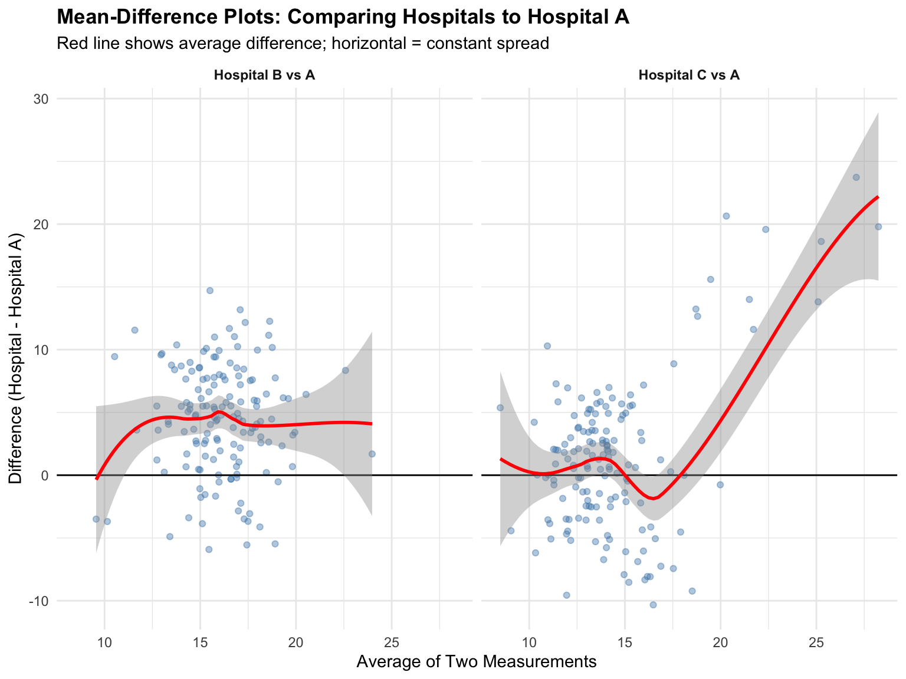
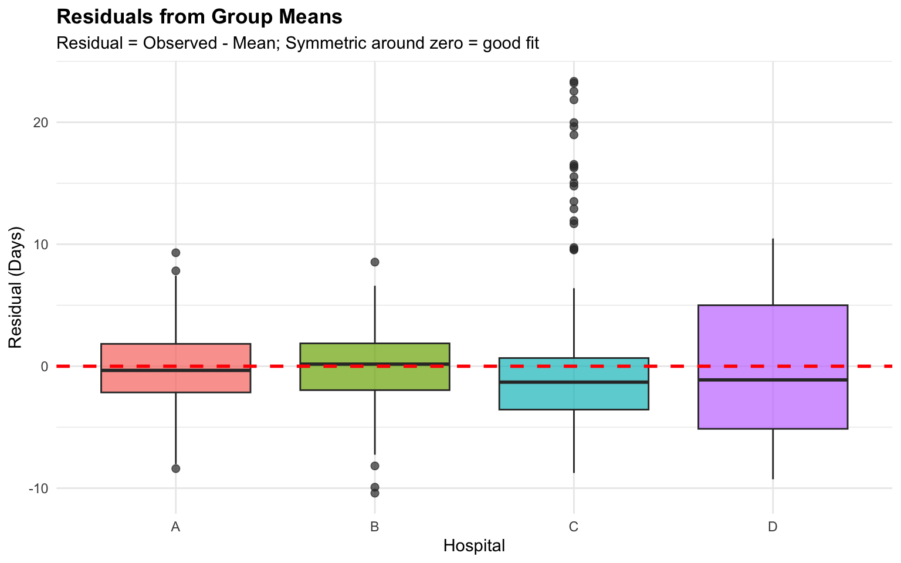
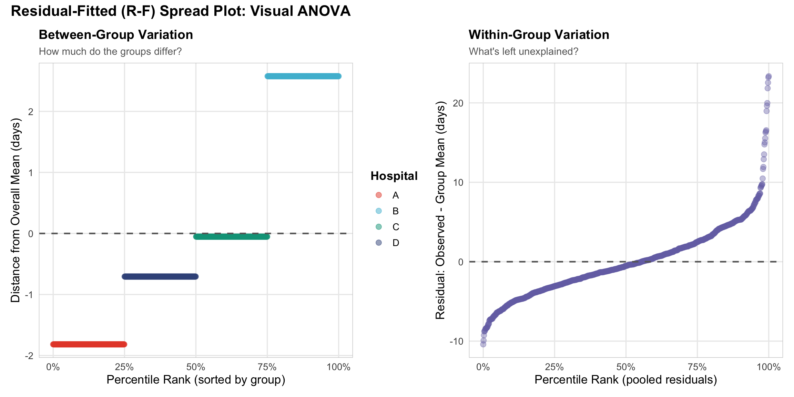
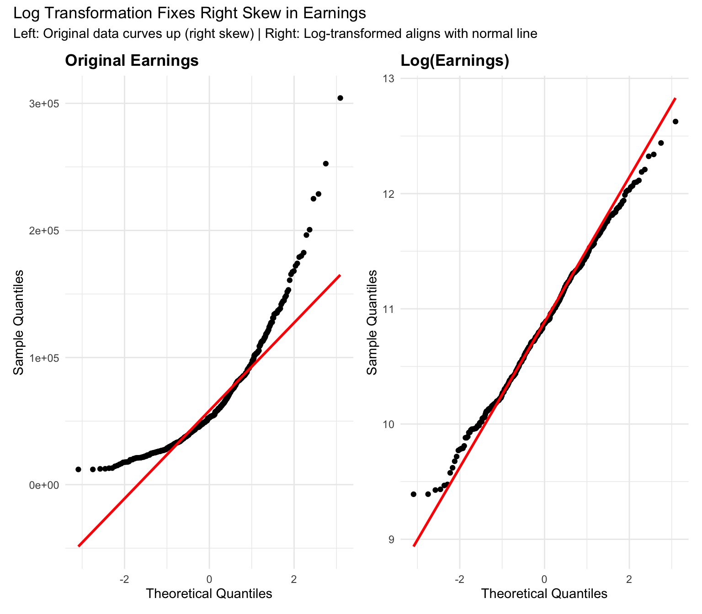
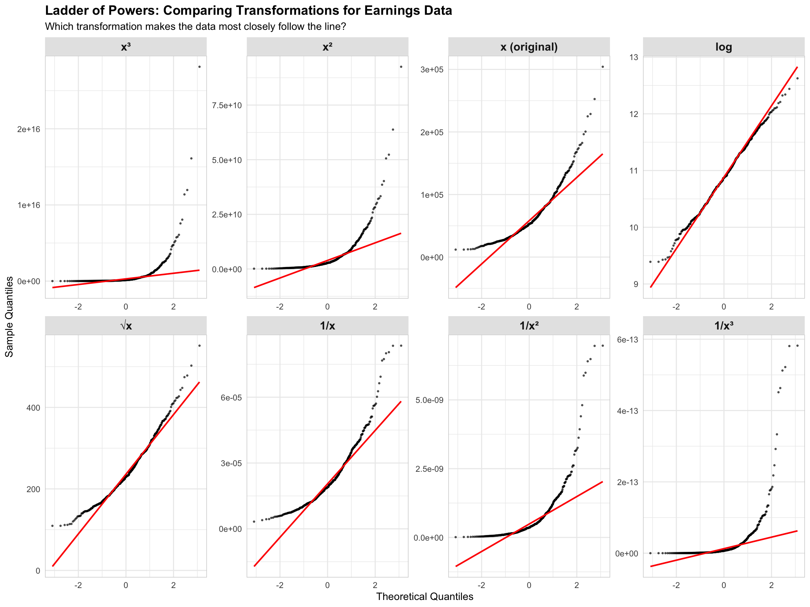

# Required packages
required_packages <- c(
"dplyr",
"ggplot2",
"tidyr",
"patchwork",
"moments",
"tukeyedar"
)
# Install missing packages
new_packages <- required_packages[!(required_packages %in% installed.packages()[,"Package"])]
if(length(new_packages)) install.packages(new_packages)
# Load packages
library(dplyr)
library(ggplot2)
library(tidyr)
library(patchwork)
library(moments)
library(tukeyedar)
# Set theme
theme_set(theme_minimal())Understanding Univariate Data: Location and Spread
Following William Cleveland’s Visualizing Data
Introduction
This notebook follows William Cleveland’s systematic approach to understanding univariate data from his foundational book “Visualizing Data” (1993). Cleveland emphasized using visualization as an analytical tool for exploration, not just for presentation.
“Visualization is critical to data analysis. It provides a front line of attack, revealing intricate structure in data that cannot be absorbed in any other way.”
— William S. Cleveland, Visualizing Data (1993)
Cleveland’s approach: before building models or making inferences, deeply understand your data through visual exploration of location, spread, and distribution shape.
Simulated Example Data
We’ll use a simulated healthcare dataset to explore Cleveland’s concepts. Imagine we’re examining patient recovery times (in days) from a medical procedure across different hospitals.
set.seed(1234)
# Hospital A: Normal distribution, mean recovery time
hospital_a <- rnorm(200, mean = 14, sd = 3)
# Hospital B: Normal distribution, longer recovery
hospital_b <- rnorm(200, mean = 18, sd = 3)
# Hospital C: Skewed distribution with some very long recoveries
hospital_c <- c(
rnorm(180, mean = 14, sd = 2.5),
runif(20, min = 25, max = 40) # Some outliers
)
# Hospital D: Bimodal distribution (two distinct patient groups)
hospital_d <- c(
rnorm(100, mean = 10, sd = 2),
rnorm(100, mean = 20, sd = 2)
)
# Combine into data frame
recovery_data <- data.frame(
hospital = rep(c("A", "B", "C", "D"), each = 200),
recovery_days = c(hospital_a, hospital_b, hospital_c, hospital_d)
)Location & Spread
Cleveland emphasized understanding the “location” and “spread” of data, which in more common parlance just means measures of central tendency and variance/dispersoin. Different measures of location and spread tell different stories.
# Calculate measures of location for each hospital
location_summary <- recovery_data |>
group_by(hospital) |>
summarize(
mean = mean(recovery_days),
median = median(recovery_days),
q25 = quantile(recovery_days, 0.25),
q75 = quantile(recovery_days, 0.75),
n = n()
) |>
mutate(across(where(is.numeric), ~round(., 1)))
location_summary |>
knitr::kable(caption = "Measures of Location by Hospital")| hospital | mean | median | q25 | q75 | n |
|---|---|---|---|---|---|
| A | 13.8 | 13.5 | 11.7 | 15.7 | 200 |
| B | 18.2 | 18.4 | 16.3 | 20.1 | 200 |
| C | 15.6 | 14.3 | 12.0 | 16.3 | 200 |
| D | 14.9 | 13.8 | 9.8 | 19.9 | 200 |
Summary statistics help:
- Hospital A & B: Mean ≈ Median (symmetric distributions)
- Hospital C: Mean > Median (right-skewed due to outliers)
- Hospital D: Bimodal pattern obscures single “center”
Visual Comparison: Mean vs. Median
Visual comparison gets us farther.
ggplot(recovery_data, aes(x = recovery_days, y = hospital)) +
geom_boxplot(outlier.alpha = 0.3, fill = "lightblue") +
geom_vline(
data = location_summary,
aes(xintercept = mean),
color = "red",
linetype = "dashed",
linewidth = 0.8
) +
geom_vline(
data = location_summary,
aes(xintercept = median),
color = "darkblue",
linetype = "solid",
linewidth = 0.8
) +
labs(
title = "Recovery Times by Hospital",
subtitle = "Solid line = median (resistant), Dashed line = mean (sensitive to outliers)",
x = "Recovery Days",
y = "Hospital"
) +
theme_minimal() +
theme(
plot.title = element_text(face = "bold"),
panel.grid.major.y = element_blank()
)
Box plots are great ways to get quick looks at location and spread. From here, you can see that the median is a skew-resistant measure. It is not affected by extreme values. The mean is sensitive to outliers. Hospital C shows outliers pulling the mean upward.
This is a rather elementary point, obviously, but for me, Cleveland’s Visualizing Data has a certain genius about showing the complexity hiding under simple concepts, while reinforcing that elementary summary and visualization tools are often the most important tools in our toolbox.
Spread: Measuring Variability
Understanding how data varies around the center is as important and sometimes more important than knowing where the center is.
spread_summary <- recovery_data |>
group_by(hospital) |>
summarize(
sd = sd(recovery_days),
iqr = IQR(recovery_days),
range = max(recovery_days) - min(recovery_days),
cv = sd / mean(recovery_days) * 100
) |>
mutate(across(where(is.numeric), ~round(., 1)))
spread_summary |>
knitr::kable(
caption = "Measures of Spread by Hospital",
col.names = c("Hospital", "Std Dev", "IQR", "Range", "CV (%)")
)| Hospital | Std Dev | IQR | Range | CV (%) |
|---|---|---|---|---|
| A | 3.1 | 4.0 | 17.7 | 22.1 |
| B | 3.0 | 3.8 | 18.9 | 16.6 |
| C | 6.1 | 4.2 | 32.1 | 39.2 |
| D | 5.6 | 10.1 | 19.7 | 37.2 |
Common metrics for understand spread are:
- IQR (Interquartile Range): Resistant to outliers, focuses on middle 50% of data
- Standard Deviation: Sensitive to outliers (see Hospital C)
- Coefficient of Variation: Standardized measure of spread relative to mean
Below we’ll explore how you can use spread and location to understand the structure of the data, check assumptions you may need for modeling (e.g., constant variance), and even get insights into the data generating mechanism of your data.
Spread-Location (S-L) Plots
S-L plots help identify whether variability is constant or changes with the level of the data. This is fundamental to many modeling assumptions (e.g., for pooled t-tests, homoskedasticity).
Cleveland recommended comparing S-L relationships across groups to identify which groups exhibit constant spread vs. monotone spread (increasing variance with location).
# For each hospital, calculate the spread for each observation
# X-axis: Group median (location)
# Y-axis: sqrt(|observation - group median|) for each individual observation
spread_location_data <- recovery_data |>
group_by(hospital) |>
mutate(
group_median = median(recovery_days),
spread = sqrt(abs(recovery_days - group_median))
) |>
ungroup()
# Create spread-location plot with all hospitals
ggplot(spread_location_data, aes(x = group_median, y = spread, color = hospital)) +
geom_jitter(width = 0.3, alpha = 0.4, size = 2) +
stat_summary(fun = median, geom = "line", color = "red", linewidth = 1.2,
aes(group = 1)) +
stat_summary(fun = median, geom = "point", color = "red", size = 3) +
labs(
title = "Spread-Location Plot: All Hospitals",
subtitle = "Each point = one observation; Red line = median spread across locations",
x = "Location: Group Median (Days)",
y = "Spread: √|Value - Group Median|",
color = "Hospital"
) +
theme_minimal() +
theme(
plot.title = element_text(face = "bold"),
legend.position = "right"
)
How to Read S-L Plots:
Each point represents one observation, plotted at its group’s median on the x-axis. The y-axis shows how far that observation deviates from its group median (on the square root scale).
- Vertical bands of points: Each vertical band corresponds to one hospital, positioned at that hospital’s median recovery time
- Width of vertical band: Shows how variable the data is within that group (wider = more variability)
- Red line: Connects the median spread values across the four locations, revealing the spread-location relationship
Interpretation:
- Hospitals A & B: Narrow vertical bands at similar median locations (14 and 18 days) indicate low, consistent variability
- Hospital C: Wider vertical band shows higher variability due to outliers
- Hospital D: Bimodal distribution creates a different spread pattern
The red line is key: - Flat red line = constant spread (homoskedastic) → assumptions of pooled t-tests, ANOVA, OLS are satisfied - Upward sloping red line = monotone spread (heteroskedastic) → variance increases with location, violating homoskedasticity assumptions
Mean-Difference Plot
When comparing two hospitals or measurement methods, Cleveland recommended plotting the difference vs. the average. This reveals whether differences are constant or depend on the magnitude.
# Create comparison data with proper matching
# Hospital B: constant offset (same SD as A, just shifted)
# Hospital C: monotone spread (variance increases with magnitude)
set.seed(789)
# For Hospital B: pair each observation with a random one from Hospital A
hospital_b_pairs <- recovery_data |>
filter(hospital == "B") |>
slice_sample(n = 150) |>
mutate(
hospital_a_value = sample(recovery_data$recovery_days[recovery_data$hospital == "A"],
size = 150, replace = TRUE),
mean_value = (recovery_days + hospital_a_value) / 2,
difference = recovery_days - hospital_a_value,
comparison = "Hospital B vs A"
)
# For Hospital C: pair observations - this has outliers so will show monotone spread
hospital_c_pairs <- recovery_data |>
filter(hospital == "C") |>
slice_sample(n = 150) |>
mutate(
hospital_a_value = sample(recovery_data$recovery_days[recovery_data$hospital == "A"],
size = 150, replace = TRUE),
mean_value = (recovery_days + hospital_a_value) / 2,
difference = recovery_days - hospital_a_value,
comparison = "Hospital C vs A"
)
comparison_pairs <- bind_rows(hospital_b_pairs, hospital_c_pairs)
ggplot(comparison_pairs, aes(x = mean_value, y = difference)) +
geom_point(alpha = 0.4, color = "steelblue") +
geom_hline(yintercept = 0, linetype = "solid", color = "black") +
geom_smooth(method = "loess", se = TRUE, color = "red", linewidth = 1) +
facet_wrap(~ comparison, ncol = 2) +
labs(
title = "Mean-Difference Plots: Comparing Hospitals to Hospital A",
subtitle = "Red line shows average difference; horizontal = constant spread",
x = "Average of Two Measurements",
y = "Difference (Hospital - Hospital A)"
) +
theme_minimal() +
theme(
plot.title = element_text(face = "bold"),
strip.text = element_text(face = "bold")
)`geom_smooth()` using formula = 'y ~ x'
Interpretation:
- Hospital B vs A: Relatively flat red line around +4 days means constant spread (simple location shift)
- Hospital C vs A: Upward-sloping red line → monotone spread (variability increases at higher values due to outliers)
This type of plot is essential in method comparison studies and reveals patterns that simple correlation or regression would miss.
Residuals: Actual vs. Fitted Values
A fundamental concept in exploratory data analysis is the residual, the difference between what we observe and an expected value based on some model or summary.
Residual = Observed Value - Fitted Value
The “fitted value” can come from:
- Mean: Using the group mean as the fitted value
- Median: Using the group median as the fitted value
- Model: Using predictions from a regression model
Residuals help us understand:
- Patterns in variation: Are errors random or systematic?
- Outliers: Which observations deviate most from expectations?
- Model fit: Does our model capture the structure in the data?
Examining residuals often provides insight into the data structure and the data generating mechanism. They are especially helpful for understanding whether data from different groups can be pooled: homogenous residuals can be pooled (e.g., in a t-test).
Box Plots of Residuals from Group Means
Let’s calculate residuals using each hospital’s mean as the fitted value:
# Calculate residuals from group means
residual_data <- recovery_data |>
group_by(hospital) |>
mutate(
group_mean = mean(recovery_days),
residual = recovery_days - group_mean
) |>
ungroup()
# Create box plots of residuals
ggplot(residual_data, aes(x = hospital, y = residual, fill = hospital)) +
geom_boxplot(alpha = 0.7, outlier.size = 2) +
geom_hline(yintercept = 0, linetype = "dashed", color = "red", linewidth = 1) +
labs(
title = "Residuals from Group Means",
subtitle = "Residual = Observed - Mean; Symmetric around zero = good fit",
x = "Hospital",
y = "Residual (Days)"
) +
theme_minimal() +
theme(
plot.title = element_text(face = "bold"),
legend.position = "none"
)
Interpretation:
- Hospital A & B: Residuals are roughly symmetric around zero (red dashed line)
- Hospital C: Positive outlier residuals → some patients take much longer than the mean
- Hospital D: Wider spread of residuals reflects the bimodal distribution
When residuals show patterns (asymmetry, increasing spread, etc.), this suggests the simple mean doesn’t fully capture the data structure.
Understanding Quantiles
The quantile is a key tool for studying spread and location together. A quantile answers the question: “What value do X% of my observations fall below?”
The pth percentile is the value where p percent of the data falls below it. For example:
- 25th percentile (p25): 25% of observations are below this value
- 50th percentile (p50): 50% of observations are below this value (this is the median)
- 75th percentile (p75): 75% of observations are below this value
Again, this is very elementary, but in practice proves very powerful.
How to Calculate Quantiles
Step 1: Sort your data from smallest to largest
Step 2: Find the position
For the pth percentile with n observations:
\[\text{Position} = p \times (n + 1)\]
Step 3: Get the value
- If the position is a whole number (like 25), use that observation
- If the position is fractional (like 25.25), interpolate between the two nearest values
There are a number of ways to calculate quantiles from Data. R’s quantile() function has 9 different ways to do it. Click this link to look through them.
Quantiles Are…
- Distribution-free
- Robust to outliers
- Easy to compare: Comparing quantiles across groups reveals differences in location, spread, and shape.
Residual-Fitted (R-F) Spread Plot
The R-F spread plot visually decomposes your data into two parts:
- What the grouping explains (left panel)
- What remains unexplained (right panel)
Think of it as a visual ANOVA. If the left panel is wide, grouping matters. If the right panel is wide, there’s lots of leftover variation.
# Calculate TWO different percentile ranks:
# 1. For left panel: sort by fitted values first (creates non-overlapping bands by group)
# 2. For right panel: sort by residuals (pools all residuals together)
rf_data <- residual_data |>
mutate(
fitted = group_mean,
grand_mean = mean(recovery_days),
fit_minus_mean = fitted - grand_mean
) |>
arrange(fitted, recovery_days) |>
mutate(
f_value_fitted = (row_number() - 1) / (n() - 1)
) |>
arrange(residual) |>
mutate(
f_value_residual = (row_number() - 1) / (n() - 1)
)
# Create separate datasets for each panel
fitted_panel <- rf_data |>
select(hospital, f_value = f_value_fitted, fit_minus_mean) |>
ungroup()
residual_panel <- rf_data |>
select(f_value = f_value_residual, residual) |>
ungroup()
# Create r-f spread plot with improved aesthetics
library(patchwork)
# Custom color palette for hospitals
hospital_colors <- c("#E64B35", "#4DBBD5", "#00A087", "#3C5488")
p_fitted <- ggplot(fitted_panel, aes(x = f_value, y = fit_minus_mean, color = hospital)) +
geom_point(alpha = 0.5, size = 2.5) +
geom_hline(yintercept = 0, linetype = "dashed", color = "gray40", linewidth = 0.8) +
scale_color_manual(values = hospital_colors) +
scale_x_continuous(labels = scales::percent_format()) +
labs(
title = "Between-Group Variation",
subtitle = "How much do the groups differ?",
x = "Percentile Rank (sorted by group)",
y = "Distance from Overall Mean (days)",
color = "Hospital"
) +
theme_minimal(base_size = 13) +
theme(
plot.title = element_text(face = "bold", size = 14),
plot.subtitle = element_text(color = "gray40", size = 11),
legend.position = "right",
legend.title = element_text(face = "bold"),
panel.grid.minor = element_blank(),
panel.border = element_rect(color = "gray80", fill = NA, linewidth = 0.5)
)
p_residual <- ggplot(residual_panel, aes(x = f_value, y = residual)) +
geom_point(alpha = 0.4, size = 2.5, color = "#7570B3") +
geom_hline(yintercept = 0, linetype = "dashed", color = "gray40", linewidth = 0.8) +
scale_x_continuous(labels = scales::percent_format()) +
labs(
title = "Within-Group Variation",
subtitle = "What's left unexplained?",
x = "Percentile Rank (pooled residuals)",
y = "Residual: Observed - Group Mean (days)"
) +
theme_minimal(base_size = 13) +
theme(
plot.title = element_text(face = "bold", size = 14),
plot.subtitle = element_text(color = "gray40", size = 11),
panel.grid.minor = element_blank(),
panel.border = element_rect(color = "gray80", fill = NA, linewidth = 0.5)
)
# Combine panels
p_fitted + p_residual +
plot_annotation(
title = "Residual-Fitted (R-F) Spread Plot: Visual ANOVA",
theme = theme(plot.title = element_text(face = "bold", size = 16))
)
How to Read This Plot
Left Panel - Between-Group Variation:
- Each colored band represents one hospital
- Band width = proportion of patients in that hospital
- Band height = how far that hospital’s average is from the overall average
- Wide vertical spread → hospitals differ a lot → grouping explains variation
- Narrow vertical spread → hospitals are similar → grouping doesn’t help much
Right Panel - Within-Group Variation:
- All residuals pooled together (no colors)
- Shows what’s left after accounting for hospital differences
- Wide vertical spread → lots of unexplained variation remains
- Narrow vertical spread → hospital membership explains most of the variation
- Points should scatter randomly around zero (horizontal line)
The Key Insight:
Compare the vertical spread of the two panels. If the left panel is much wider than the right, the grouping (hospital) explains most of the variation. If the right panel is wider, there’s lots of individual variation that hospital membership doesn’t capture.
Transformations
Transformations can fix skewed data and stabilize variance. Cleveland emphasized using visualization (especially Q-Q plots) to diagnose problems and assess whether transformations help.
Example 1: Log Transformation for Earnings
Why log transform earnings? Income and earnings follow multiplicative processes. A 10% raise means different dollar amounts for low vs high earners, but the same proportional change. Earnings data is typically right-skewed with a long tail.
# Simulate earnings data with right skew (multiplicative process)
set.seed(456)
n <- 500
# Generate log-normal earnings (typical for income data)
earnings_data <- data.frame(
earnings = exp(rnorm(n, mean = log(50000), sd = 0.6)), # Median ~$50k
health_score = rnorm(n, mean = 75, sd = 10)
) |>
mutate(
log_earnings = log(earnings)
)
# Create side-by-side Q-Q plots
p1 <- ggplot(earnings_data, aes(sample = earnings)) +
stat_qq() +
stat_qq_line(color = "red", linewidth = 1) +
labs(
title = "Original Earnings",
x = "Theoretical Quantiles",
y = "Sample Quantiles"
) +
theme_minimal() +
theme(plot.title = element_text(face = "bold"))
p2 <- ggplot(earnings_data, aes(sample = log_earnings)) +
stat_qq() +
stat_qq_line(color = "red", linewidth = 1) +
labs(
title = "Log(Earnings)",
x = "Theoretical Quantiles",
y = "Sample Quantiles"
) +
theme_minimal() +
theme(plot.title = element_text(face = "bold"))
p1 + p2 +
plot_annotation(
title = "Log Transformation Fixes Right Skew in Earnings",
subtitle = "Left: Original data curves up (right skew) | Right: Log-transformed aligns with normal line"
)
Interpretation:
- Left panel: Original earnings curve upward at upper quantiles → right skew
- Right panel: Log(earnings) points lie on the line → approximately normal
- Why it works: Log transforms multiplicative relationships into additive ones
- On log scale, a 10% raise is the same distance for everyone
Example 2: The Ladder of Powers
Try several transformations from the ladder of powers and visually compare them using Q-Q plots.
For example:
- \(x^3\) (cube)
- \(x^2\) (square)
- \(x^1\) (original, no transformation)
- \(x^{1/2}\) (square root)
- \(x^{-1}\) (reciprocal)
- \(x^{-2}\) (reciprocal square)
- \(x^{-3}\) (reciprocal cube)
I add \(\log(x)\) in there too. You can think of it as the limit of \(x^p\) as \(p\) approaches 0, since for small \(p\), \(x^p\) behaves similarly to \(\log(x)\). Cleveland (1993, p. 56) explains that the derivative of \(\log(x)\) is \(\frac{1}{x}\), and the derivative of \(x^{0.001}\) is proportional to \(x^{-0.999}\). The intuition is:
- For large \(p\), you get steep curves (\(x^2\), \(x^3\)).
- For small \(p\), they flatten out and start to look like \(\log(x)\).
library(tidyr)
# Use the earnings data from Example 1
set.seed(456)
n <- 500
earnings <- exp(rnorm(n, mean = log(50000), sd = 0.6))
# Apply different power transformations
transformation_data <- data.frame(
x = earnings
) |>
mutate(
x_cubed = x^3,
x_squared = x^2,
x_original = x,
x_log = log(x),
x_sqrt = sqrt(x),
x_inv = 1/x,
x_inv_squared = 1/(x^2),
x_inv_cubed = 1/(x^3)
) |>
pivot_longer(
cols = starts_with("x_"),
names_to = "transformation",
values_to = "value"
) |>
mutate(
transformation = factor(
transformation,
levels = c("x_cubed", "x_squared", "x_original", "x_log", "x_sqrt", "x_inv", "x_inv_squared", "x_inv_cubed"),
labels = c(
"x³",
"x²",
"x (original)",
"log",
"√x",
"1/x",
"1/x²",
"1/x³"
)
)
)
# Create trellis of Q-Q plots
ggplot(transformation_data, aes(sample = value)) +
stat_qq(size = 0.5, alpha = 0.6) +
stat_qq_line(color = "red", linewidth = 0.8) +
facet_wrap(~ transformation, scales = "free", ncol = 4) +
labs(
title = "Ladder of Powers: Comparing Transformations for Earnings Data",
subtitle = "Which transformation makes the data most closely follow the line?",
x = "Theoretical Quantiles",
y = "Sample Quantiles"
) +
theme_minimal(base_size = 11) +
theme(
strip.text = element_text(face = "bold", size = 12),
strip.background = element_rect(fill = "gray90", color = NA),
panel.border = element_rect(color = "gray80", fill = NA, linewidth = 0.5),
plot.title = element_text(face = "bold", size = 14),
plot.subtitle = element_text(size = 11)
)
How to read this:
- Each panel shows the same data with a different transformation
- Look for which Q-Q plot has points closest to the red line
Strategy: Create this trellis for your data, compare visually. The goal isn’t necessarily to find a fix, but to understand the structure of the data. One tip: when the log is the best or close to the others – pick it. You can then use multiplicative interpretation.